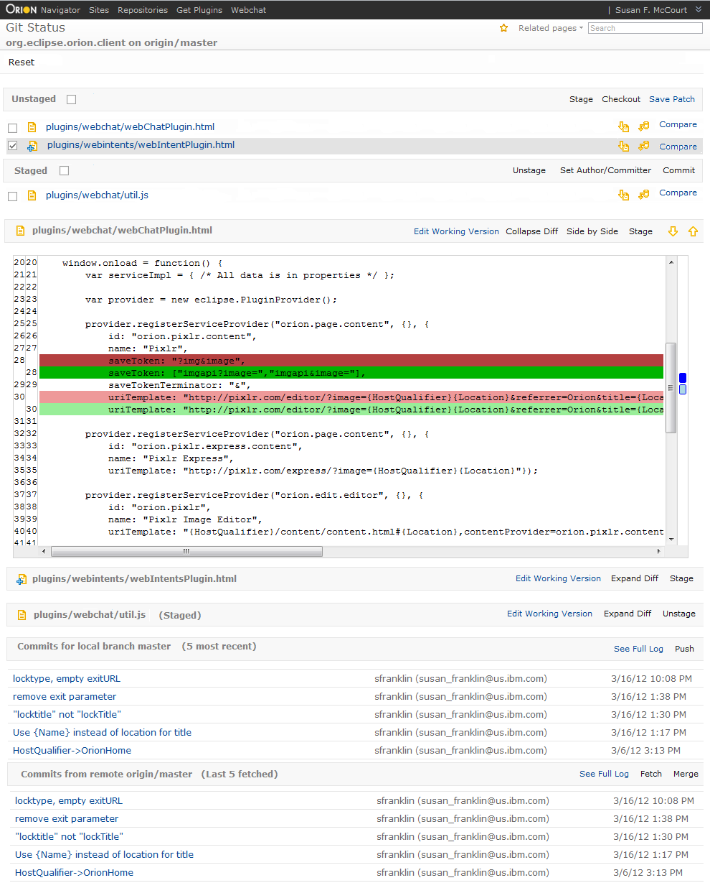

<a href="git-status.html">current Git Status page</a><br/>



<map name="map">
<!-- #$-:Image map file created by GIMP Image Map plug-in -->
<!-- #$-:GIMP Image Map plug-in by Maurits Rijk -->
<!-- #$-:Please do not edit lines starting with "#$" -->
<!-- #$VERSION:2.3 -->
<!-- #$AUTHOR:tzarna  -->
<area shape="rect" coords="55,3,117,25" href="navigator.html" />
<area shape="rect" coords="157,5,239,23" href="git-repositories.html" />
<area shape="rect" coords="120,3,156,21" href="sites.html" />
<area shape="rect" coords="708,794,842,817" href="editor.html" />
<area shape="rect" coords="697,843,832,868" href="editor.html" />
<area shape="rect" coords="559,306,702,334" href="editor.html" />
<area shape="rect" coords="845,889,932,923" href="git-log.html" />
</map>

<script type="text/javascript" src="http://ajax.googleapis.com/ajax/libs/jquery/1.5.2/jquery.min.js"></script>
<script type="text/javascript" src="http://davidlynch.org/projects/maphilight/jquery.maphilight.min.js"></script>
<script type="text/javascript">
$("img").attr("class", "map");
$(function() {
	$('.map').maphilight({alwaysOn:true, fill:false});
});
</script>